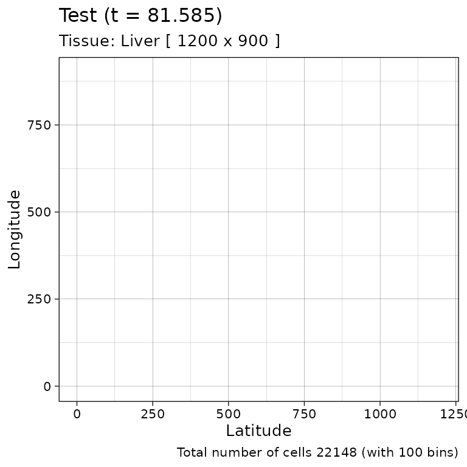
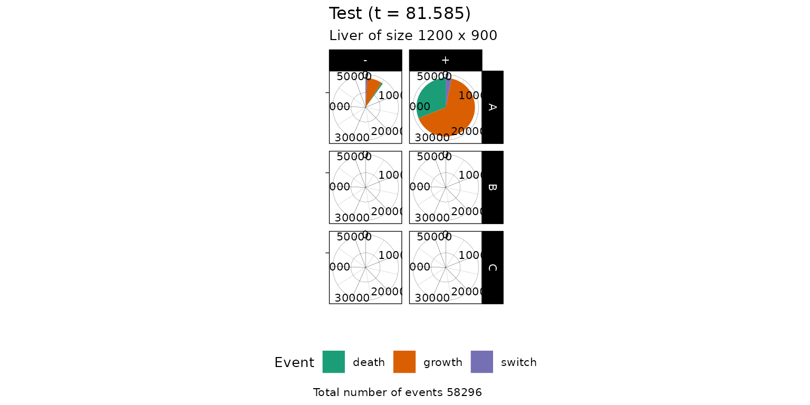

rRACES wraps the RACES simulation and data-generation engine by using the R/C++ Rcpp interface
It can:
- simulate a spatio-temporal stochastic process of tumour evolution;
- define a tumour sampling strategy;
- generating realistic sequencing data based on sampling and simulation.
Simulating tumour growth
The first step to use rRACES is to load it.
library(rRACES)Tissue specification
Simulations are represented by the class Simulation. In
order to perform a simulation, a new object of this class must be
created.
sim <- new(Simulation)This step automatically builds a 1000x1000-cells tissue and sets the
name of the simulation to be
races_<date>_<hour>. The binary dump of the
simulation will be saved in a directory having the same name of the
simulation. A custom name can be provided by using a further parameter
during the simulation creation.
sim <- new(Simulation, "Test")The sim object exposes methods to get information about
the simulation and control it.
# Get the simulation directory, i.e., "Test"
sim$get_name()
#> [1] "Test"
# Get the tissue size, i.e., c(1000,1000)
sim$get_tissue_size()
#> [1] 1000 1000We can change the tissue size and label it with a name.
# Set the tissue name and size to different values
sim$update_tissue("Liver", 1200, 900)
# Get the tissue name, i.e., "Liver"
sim$get_tissue_name()
#> [1] "Liver"
# Get the tissue size, i.e., c(1200,900)
sim$get_tissue_size()
#> [1] 1200 900Species and their evolutionary relations
In order to simulate the evolution of some species we need to add
them to our object. This process defines the evolutionary parameters of
the species. For example, we may define two genotypes A and
B, with their epigenetic states
+/-, called epistates. By doing this, we
define the 4 species distinct:
-
A+andA-, as a proxy for the genotypeAwith the reversible+/-marker; -
B+andB-, as a proxy for the genotypeBwith the reversible+/-marker;
For each species, we need to define:
- growth rate \(\lambda\): rate at
which cells duplicate inheriting the epigenetic marker (e.g., one cell
of type
A+creates two cells of typeA+); - death rate \(\delta\): rate at
which cells di (e.g., one cell of type
A+is removed from the simulation); - epigenetic rate \(\epsilon\): rate
+-or-+at which cells duplicate and flip the epigenetic marker of one of the progeny (e.g., one cell of typeA+determines one typeA+and one of typeA-, or vice versa);
# add two genotype, "A" and "B", together with their species
sim$add_genotype(name = "A",
epigenetic_rates = c("+-" = 0.01, "-+" = 0.01),
growth_rates = c("+" = 0.2, "-" = 0.08),
death_rates = c("+" = 0.1, "-" = 0.01))
sim$add_genotype(name = "B",
epigenetic_rates = c("+-" = 0.05, "-+" = 0.05),
growth_rates = c("+" = 0.1, "-" = 0.3),
death_rates = c("+" = 0.05, "-" = 0.1))At this point no evolutionary relation between the genotypes
A and B is defined. We need to add a
parent/child relation which will fire at a predefined simulation time,
in any of the cells in the +/- state.
For example, I can program a timed transition from species one cell
of genotype A to one of genotype B, at time
30. In this case, a cell at random from species
A+ or A- will be selected and will be assigned
a new type B+ or B- depending on its
epistate.
# Schedule a mutation at time 40 from one of the species of
# genotype "A" to the species of "B" having the same
# epigenetic state
sim$schedule_genotype_mutation("A", "B", 40)
# Get the simulation species and their rates
sim$get_species()
#> genotype epistate growth_rate death_rate switch_rate
#> 1 A - 0.08 0.01 0.01
#> 2 A + 0.20 0.10 0.01
#> 3 B - 0.30 0.10 0.05
#> 4 B + 0.10 0.05 0.05Initial cell positioning
To be able to simulate the model, an initial cell needs to be
displaced in the tissue. We add one cell of species A+
(genotype A in epistate +) in position
(500, 500).
sim$add_cell("A+", 500, 500)We can query the current state of the simulation, and extract the cell position
# Counts per species
sim$get_counts()
#> genotype epistate counts
#> 1 A - 0
#> 2 A + 1
#> 3 B - 0
#> 4 B + 0
# Cells position
sim$get_cells()
#> cell_id genotype epistate position_x position_y
#> 1 0 A + 500 500Species evolution
There are 3 ways to let the simulation evolve:
- advancing until a new time
tis reached; - advancing until the number of cells in a species reaches a given threshold;
- advancing until a desired number of firings (of one particular event) has occurred.
# Run the simulation up until the there are less than 500 cells in
# the species A+
sim$run_up_to_size("A+", 500)
# Counts per species now reports 500 for A+
sim$get_counts()
#> genotype epistate counts
#> 1 A - 114
#> 2 A + 501
#> 3 B - 0
#> 4 B + 0
# Get the number of fired event per species
sim$get_firings()
#> event genotype epistate fired
#> 1 death A - 9
#> 2 growth A - 91
#> 3 switch A - 16
#> 4 death A + 411
#> 5 growth A + 944
#> 6 switch A + 49
#> 7 death B - 1
#> 8 growth B - 0
#> 9 switch B - 0
#> 10 death B + 0
#> 11 growth B + 0
#> 12 switch B + 0A small number of cell deaths have occurred in species “A-” up to this point. Let us simulate the system until there are 100 of them at least.
sim$run_up_to_event("death", "A-", 100)
# Get the number of fired event per species. The row "death", "A",
# "-" now reports 100.
sim$get_firings()
#> event genotype epistate fired
#> 1 death A - 101
#> 2 growth A - 887
#> 3 switch A - 101
#> 4 death A + 3543
#> 5 growth A + 7406
#> 6 switch A + 384
#> 7 death B - 1
#> 8 growth B - 0
#> 9 switch B - 0
#> 10 death B + 0
#> 11 growth B + 0
#> 12 switch B + 0
# Get the simulation clock
sim$get_clock()
#> [1] 66.58474
# Run the simulation for other 15 time units
sim$run_up_to_time(sim$get_clock() + 15)
# Get again the simulation clock
sim$get_clock()
#> [1] 81.58532At this point, we can query the simulation configuration in a number of ways.
Let us use dplyr to filter the query results.
# Get the cells in the tissue at current simulation time
sim$get_cells() %>% head()
#> cell_id genotype epistate position_x position_y
#> 1 65885 A + 415 498
#> 2 73874 A + 416 485
#> 3 58836 A + 416 498
#> 4 76974 A + 417 485
#> 5 75630 A + 417 488
#> 6 71520 A - 417 493
# Get the cells in the tissue rectangular sample having
# [500,500] and [505,505] as lower and upper corners, respectively
sim$get_cells(c(500, 500), c(505, 505)) %>% head()
#> cell_id genotype epistate position_x position_y
#> 1 62816 A + 500 500
#> 2 61981 A + 500 501
#> 3 62245 A + 500 502
#> 4 75875 A - 500 503
#> 5 61246 A + 500 504
#> 6 62845 A + 500 505
# Get the cells in the tissue having epigenetic state "-"
sim$get_cells(c("A", "B"), c("-")) %>% head()
#> cell_id genotype epistate position_x position_y
#> 1 71520 A - 417 493
#> 2 46804 A - 418 487
#> 3 43328 A - 418 498
#> 4 51794 A - 418 509
#> 5 40089 A - 419 486
#> 6 41701 A - 419 488
# Get the cells in the tissue having epigenetic state "-" and,
# at the same time, belonging to rectangular sample bounded by
# [500,500] and [505,505] as lower and upper corners, respectively
sim$get_cells(c(500, 500), c(505, 505), c("A", "B"), c("-")) %>% head()
#> cell_id genotype epistate position_x position_y
#> 1 75875 A - 500 503
#> 2 75876 A - 501 505
#> 3 41666 A - 502 501
#> 4 72411 A - 504 501
#> 5 46775 A - 504 503
#> 6 46207 A - 505 501We can also randomly select one of the cells in a genotype or one of the cells that belongs to a genotype and lays in a rectangular selection.
# randomly select one cell in the genotype "A"
sim$choose_cell_in("A")
#> $cell_id
#> [1] 38748
#>
#> $genotype
#> [1] "A"
#>
#> $epistate
#> [1] "-"
#>
#> $position_x
#> [1] 496
#>
#> $position_y
#> [1] 533
# calling it again may result in a different cell
sim$choose_cell_in("A")
#> $cell_id
#> [1] 58706
#>
#> $genotype
#> [1] "A"
#>
#> $epistate
#> [1] "+"
#>
#> $position_x
#> [1] 445
#>
#> $position_y
#> [1] 490
# randomly select one cell in the genotype "A"
# in the tissue rectangular selection [500,550]x[350,450]
sim$choose_cell_in("A", c(500, 350), c(550, 450))
#> $cell_id
#> [1] 73341
#>
#> $genotype
#> [1] "A"
#>
#> $epistate
#> [1] "+"
#>
#> $position_x
#> [1] 547
#>
#> $position_y
#> [1] 446If, at this point in the simulation, we would like to generate a new
genotype C from one of the cells having genotype
A in the rectangle \([450,500]\times [550, 600]\), we need
to:
- randomly select one cell among those of
Alaying in \([450,500]\times [550, 600]\) by callingchoose_cell_in - setup the new genotype
C - call the
mutate_progenymethod
# Identify one cell among those of `A` laying in the rectangle
# [450,500]x[550,600]
cell <- sim$choose_cell_in("A", c(450, 550), c(500, 600))
# se the selected cell
cell
#> $cell_id
#> [1] 67925
#>
#> $genotype
#> [1] "A"
#>
#> $epistate
#> [1] "+"
#>
#> $position_x
#> [1] 484
#>
#> $position_y
#> [1] 571
# add the genotype "C" together with its species
sim$add_genotype(name = "C",
epigenetic_rates = c("+-" = 0.01, "-+" = 0.01),
growth_rates = c("+" = 0.2, "-" = 0.3),
death_rates = c("+" = 0.1, "-" = 0.01))
# simulate the duplication of the cell and switch the genotype of one
# of its progeny (the one laying in the original position) into "C"
sim$mutate_progeny(cell, "C")
# the new cell in the original position has genotype "C"
sim$get_cell(cell$position_x, cell$position_y)
#> $cell_id
#> [1] 78261
#>
#> $genotype
#> [1] "C"
#>
#> $epistate
#> [1] "+"
#>
#> $position_x
#> [1] 484
#>
#> $position_y
#> [1] 571We can retrieve the simulation initial condition by calling the
Simulation method get_added_cells().
sim$get_added_cells()
#> genotype epistate position_x position_y time
#> 1 A + 500 500 0Time series data collection and presentation
At the end of any run_to_* methods, RACES stores the
data about the number of species cells and that of event firings. rRACES
offers the time series of these data to users by means of two
Simulation methods
The firing evolution can be obtained by using the method
get_firing_history.
sim$get_firing_history()For example, the total number of the deaths on B+ at the
end of the three previous calls of the run_to_* methods can
be obtained by using the following code.
sim$get_firing_history() %>%
filter(event == "death", genotype == "B", epistate == "-")
#> event genotype epistate fired time
#> 1 death B - 1 46.36548
#> 2 death B - 1 66.58474
#> 3 death B - 1 81.58532If we are instead interested into the changes in the number of cells
per species, we can use the method get_count_history().
sim$get_firing_history() %>%
filter(event == "death", genotype == "B", epistate == "-")
#> event genotype epistate fired time
#> 1 death B - 1 46.36548
#> 2 death B - 1 66.58474
#> 3 death B - 1 81.58532If we are interested in collecting the number of cells per species or
event firings also during the evaluation of a run_to_*
method, we must set the Simulation property
history_delta.
sim$history_delta
#> [1] 0By default, history_delta is set to 0, but it can be set
to any positive real value \(d\) so to
sample the simulation statistics every \(d\) time units.
# set the history delta
sim$history_delta <- 20
# get the new history delta
sim$history_delta
#> [1] 20Drift and the death activation level
Any species that has a death rate greater than 0 can become extinct as soon as it appears due to the premature death of the progenitor cell. This phenomenon is called drift.
While drift occurs in Nature, it can make simulating by chance a specific (and possible long) sequence of mutations complicated.
Users can avoid drift by setting the death activation level. This value is the minimum number of cells that enables cell death in a species. The cell of a species \(S\) can die if and only if that \(S\) has reached the death activation level at least once during the simulation.
This threshold holds for all the species and it is set to 1 by default.
sim$death_activation_level
#> [1] 1However, it can be risen as much as we want to avoid species drift.
# set the death activation level
sim$death_activation_level <- 50
# get the new death activation level
sim$death_activation_level
#> [1] 50The lineage graph
The lineage graph represents the species derivations. It is a graph (network) between species and it contains an edge from a species \(A\) to a species \(P\) if and only if one of the cells in \(P\) is direct descentent of a cell in \(A\). In this case, \(A\) and \(P\) are called ancestor and progeny, respectively.
The lineage graph maintains, for each edge, the time of the first mutation or switch from the ancestor to the progeny. While the lineage graph on genotypes is traditionally acyclic, dealing with epigenetic states frequently leads to cyclic lineage graphs.
The lineage graph of the current simulation can be obtained as follow.
# get the lineage graph
sim$get_lineage_graph()
#> ancestor progeny first_cross
#> 1 Wild-type A+ 0.00000
#> 2 A+ A- 17.67530
#> 3 A- A+ 29.88642
#> 4 A- B- 39.99796
#> 5 A+ C+ 81.58532The lineage graph contains a special species: the
Wild-type species. Whenever a cell is manually added to the
simulation, an edge from the Wild-type to the cell species
is added to the lineage graph.
Ploting simulation results
The state of simulation can be depicted by using three different plotting functions.
plot_state(sim)
plot_tissue(sim)
Plot firings statistics
plot_firings(sim)
At the end of the computation, the directory Test will
contain simulated data usable by RACES.